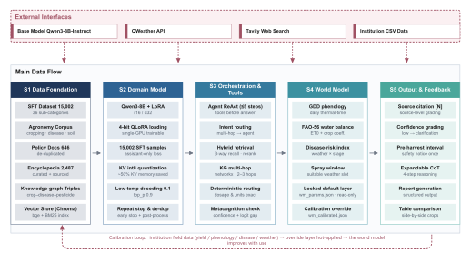
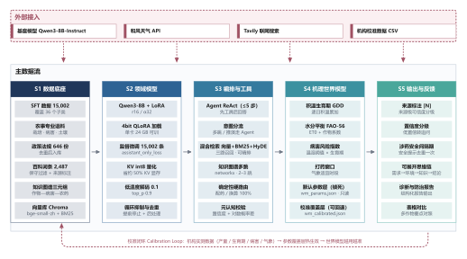

仓衡 1.0
ReleasedCanbal v1.0 · Agricultural Intelligence System
A vertical-domain large language model system designed for smart agriculture. Built upon Qwen3-8B with extensive agricultural instruction tuning, the system integrates multi-source perception with intelligent decision-making. Pioneering the introduction of metacognitive mechanisms, the model achieves self-reflection and strategy optimization capabilities. It incorporates real-time information retrieval, meteorological data fusion, multi-agent collaborative reasoning, domain knowledge graph, and RAG-enhanced retrieval modules, providing comprehensive intelligent support for agricultural production, research, and management.
Highlights
Real-time retrieval · Meteorological fusion · Multi-agent reasoning · Metacognitive self-reflection · Domain knowledge graph · RAG-enhanced retrieval
Technical Report
This report currently contains the system architecture diagram. Detailed evaluation results are not yet available and will be updated here once released.


Architecture Overview
- S1 Data FoundationSFT dataset of 15,002 samples across 36 sub-categories; agronomy corpus (cropping · disease · soil); 646 de-duplicated policy documents; 2,487 curated and sourced encyclopedia entries; crop–disease–pesticide knowledge-graph triples; Chroma vector store with bge + BM25 index.
- S2 Domain ModelQwen3-8B + LoRA (r16 / α32); 4-bit QLoRA loading, single-GPU trainable; 15,002 supervised samples with assistant-only loss; KV int8 quantization saving ~50% KV memory; low-temperature decoding (0.1, top_p 0.9); repeat stop and de-duplication.
- S3 Orchestration & ToolsAgent ReAct with at most 5 steps (tools before answer); intent routing (multi-hop → agent); hybrid retrieval (3-way recall · rerank); knowledge-graph multi-hop (networkx · 2–3 hops); deterministic routing with exact dosage and units; metacognition check (confidence + logit gap).
- S4 World ModelGDD phenology (daily thermal-time accumulation); FAO-56 water balance (ET0 + crop coefficient); disease-risk index (weather × growth stage); spray window (suitable weather slot); locked default parameter layer (wm_params.json, read-only); calibration override (wm_calibrated.json).
- S5 Output & FeedbackSource citation [N] with source-level grading; confidence grading (low → clarification); pre-harvest interval safety notice shown once; expandable chain-of-thought (4-step reasoning); structured report generation; side-by-side crop table comparison.
External Interfaces
Base model Qwen3-8B-Instruct · QWeather API · Tavily web search · institution CSV data
Calibration Loop Institution field data (yield / phenology / disease / weather) → override layer hot-applied → the world model improves with use.
Other Versions
In DevelopmentLater versions are currently under development and have not been released. Technical reports and evaluation results will be published here once available.